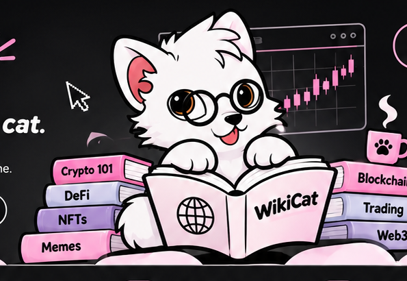

📚
Explore
Follow WikiCat down the internet's most interesting rabbit holes.
The internet's curious cat.
A community-led meme coin project planned for Robinhood Chain. Curious by nature, unserious by choice. Here for the memes, the lore and the people.

Always exploring the strange corners of the internet.
Built around a character, a community and a shared sense of humour.
A meme project planned for the Robinhood Chain ecosystem.
WikiCat is a curious little explorer with a nose for rabbit holes, crypto culture and internet nonsense. It reads, investigates, gets distracted by memes, then comes back with another question.
This is a meme-first community project. No complicated protocol story — just a recognisable character, playful lore and a community creating the next chapter together.
Follow WikiCat down the internet's most interesting rabbit holes.
Make the character your own with memes, art and community jokes.
Help shape the lore and grow a community of curious internet cats.
Establish the character, website, social presence and community lore.
Publish verified token details and launch information when ready.
Community memes, creative campaigns and shared internet adventures.
Grow the community and let the next ideas come from its members.
Contract address and official buy link will be published here after launch details are confirmed. Always verify links through official WikiCat channels.
Follow the project and help write the WikiCat story.